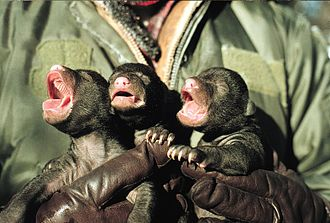

Спариваются барибалы в мае—июле. Беременность длится до 220 дней,
эмбрион начинает развиваться только осенью и только при условии, что
самка накапливает достаточно жира. Детёныши, 1—5 (обычно 2—3),
рождаются в январе—феврале, во время зимнего сна. Они очень малы,
всего 200—450 г весом; это один из наименьших размеров детёнышей
относительно размера взрослых особей у плацентарных млекопитающих.
Когда весной самка с медвежатами покидает берлогу, они весят уже 2—5
кг. Самостоятельными они становятся уже к осени, однако остаются с
матерью до следующего лета. Когда у самки начинается новая течка, она
прогоняет подросших медвежат со своей территории. Самка приносит
потомство каждые 2 года; в неурожайные годы пауза может затягиваться
на 3—4 года. Самцы прямо не участвуют в заботе о потомстве, но непрямо
влияют на него, отгоняя от территории конкурирующих самцов.
Половая зрелость у барибалов наступает в 2—5 лет. Самцы продолжают
расти до 10—12 лет. Продолжительность жизни в природе — 10 лет, в
неволе — до 30 лет.
В некоторых местностях барибал является объектом охоты (используется
шкура, реже мясо и жир). Барибалов также отстреливают как вредителей,
разоряющих сады, поля и пасеки. Гораздо большую опасность представляют
барибалы, привыкшие кормиться возле человеческого жилья; известны
случаи, когда медведи ранили или убивали помешавших им людей. Однако
за весь XX век в Северной Америке зарегистрировано всего 52 случая
смерти от нападения барибалов (за тот же период бурые медведи явились
причиной 50 смертей, белые — 5). Есть основания считать, что какое-то
количество смертельных случаев осталось неучтённым, лишь данные
последних десятилетий можно считать более или менее полными. Барибалы,
в отличие от бурых медведей, довольно робки и редко атакуют людей,
даже будучи ранеными. Большее число нападений и большее число
смертельных случаев, чем при нападениях бурых медведей, связано с
гораздо более высокой численностью барибалов.
Ареал барибала с начала XX века сильно сократился, но в результате
охранных мероприятий он снова стал нередок во многих местностях
Северной Америки, а в национальных парках и заказниках даже
многочислен. По последним оценкам в мире насчитывается до 600 000
особей, большинство из которых проживает на западе континента.
Плотность популяции сильно варьируется — если в штате Миннесота
проживает 30 000 медведей, то в соседней Айове, где земли
преимущественно распаханы, их практически не осталось. Под угрозой
вымирания находятся популяции Луизианы и Флориды, а также Мексики.
При встрече с барибалом рекомендуется издавать громкий шум, чтобы его
отпугнуть.